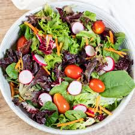

Fresh Salade

Steps
- Wash and chop vegetables (lettuce, cucumbers, tomatoes, carrots, etc.).
- Slice fruits (apples, grapes, or oranges) if using fruits.
- In a small bowl, mix olive oil, lemon juice, salt, pepper, and a pinch of sugar to make the dressing.
- Combine the vegetables and fruits in a large bowl.
- Pour the dressing over the salad and toss until well mixed.
- Optionally, add nuts, seeds, or croutons for extra crunch.
- Serve immediately and enjoy!
Video Guide
← Back to Recipes